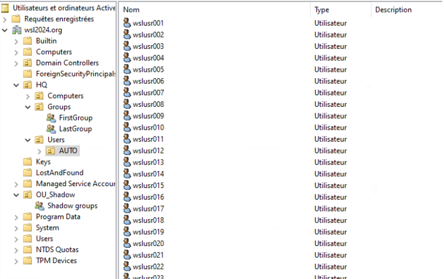
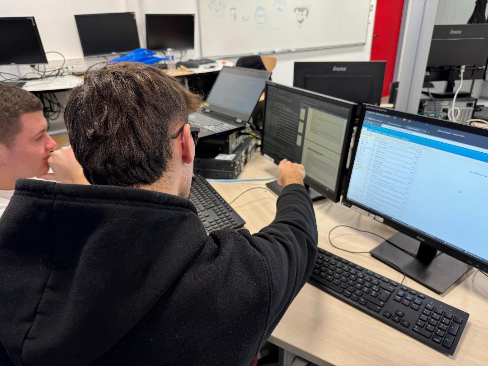

Ce projet s'inscrit dans le cadre de ma formation en BUT Réseaux et Télécommunications, où il m'a été demandé de travailler sur une étude de cas proche des problématiques
rencontrées dans le monde professionnel. L’objectif principal était de concevoir et déployer une infrastructure réseau complète et fonctionnelle,
capable de répondre aux besoins techniques et organisationnels d'une entreprise en pleine expansion.
À travers ce projet, il s'agissait de prendre en charge plusieurs aspects fondamentaux du réseau : la configuration des équipements de commutation et de
routage, la mise en place de services réseau tels que DHCP, DNS, ou encore l'authentification Active Directory, tout en veillant à respecter des critères
de performance, de sécurité et de disponibilité. Une attention particulière a également été portée à l'interconnexion des différents sites via des solutions
WAN et au déploiement d'environnements virtualisés, mêlant systèmes physiques et virtuels pour reproduire un scénario réaliste.

Capture d'écran de l'active directory répértoriant les utilisateurs
Ce travail visait non seulement à renforcer mes compétences techniques, mais également à développer des capacités d'analyse, de résolution de problèmes et de documentation des
infrastructures mises en place. La mise en œuvre rigoureuse des technologies et le respect des bonnes pratiques ont été des priorités tout au long de ce
projet, avec une importance donnée à la validation et aux tests pour garantir la fiabilité des solutions proposées.

Photo d'Antonin Wittig m'expliquant des concepts techniques liés aux certificats de sécurité